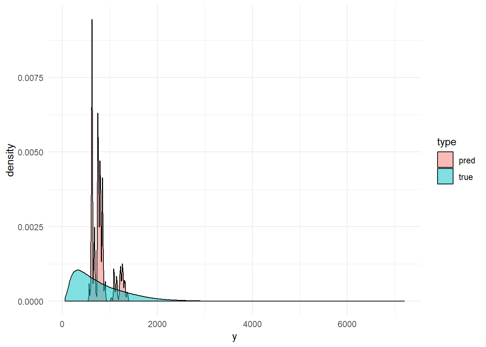
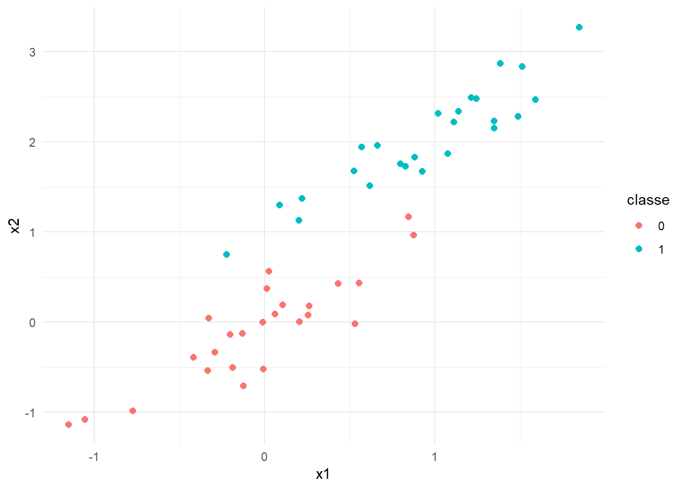
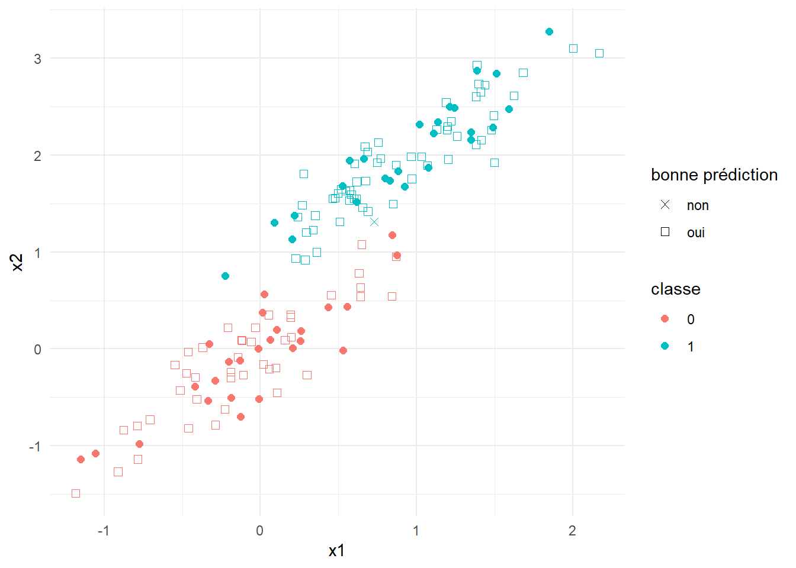
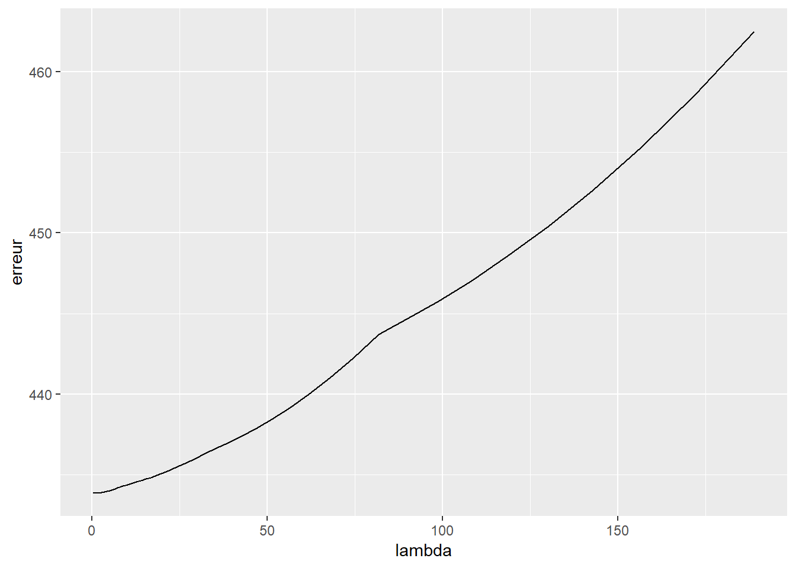
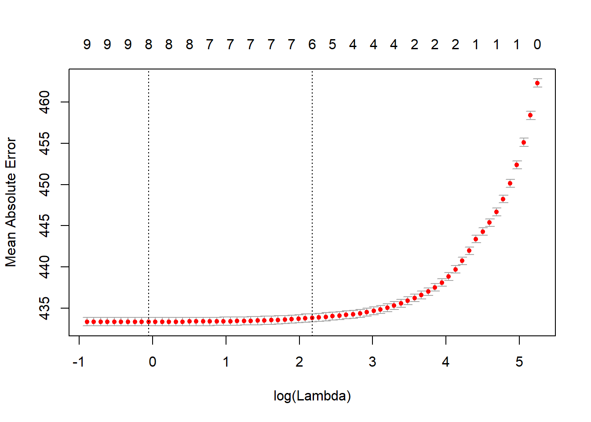

Chapitre 6 Construction de modèles
En introduction du document, nous avons fait l’hypothèse qu’il existe une fonction \(f\) connectant nos variables explicatives \(\mathbf{x}\) à \(y\) de telle sorte que \[\begin{equation} y \approx f(\mathbf{x}). \tag{6.1} \end{equation}\] L’objectif principal, dans ce chapitre, est d’apprendre (ou plutôt d’approximer) la fonction \(f\) à l’aide de la théorie de l’apprentissage statistique. Plusieurs éléments sont tirés des livres An Introduction to Statistical Learning: with Application in R de Gareth James, Daniela Witten, Trevor Hastie et Robert Tibshirani (James et al. 2014); The Elements of Statistical Learning de Trevor Hastie, Robert Tibshirani et Jerome H. Friedman (Friedman, Hastie, and Tibshirani 2001). L’expression apprentissage statstique a été grandement popularisée par ces auteurs, qui donne la définition (traduction libre)
L’apprentissage statistique fait référence à un ensemble d’outils pour modéliser et comprendre des jeux de données complexes. C’est une sous-discipline récente de la statistique qui se développe en parallèle avec les avancées en informatique et, plus particulièrement, en apprentissage automatique. (James et al. 2014)
Après le nettoyage des données du chapitre 5, nous avons à notre disposition des données prêtes pour utilisation avec le modèle de notre choix. Évidemment, le choix des variables explicatives reste préliminaire : on peut réaliser, après avoir tenté plusieurs modèles, qu’elles ne sont pas assez informatives pour permettre des prédictions satisfaisantes. Il faudra alors considérer d’autres options; transformer nos variables, ou en en collecter de nouvelles.
En supposant que le lecteur possède des connaissances de base en statistique, les sujets suivants sont traités : l’identification de modèles adéquats; l’estimation de modèles (fonction de perte, compromis biais-variance); l’évaluation d’un modèle (validation croisée, erreur de généralisation).
Finalement, nous pointerons quelques fois vers la librairie (caret)[https://topepo.github.io/caret/index.html], qui contient plusieurs fonctions permettant une modélisation fluide.
6.1 Gestion des données
Concepts clefs : entraînement/validation/test
6.1.1 Divisions entraînement/validation/test
Pour plusieurs raisons, il est conseillé, avant même le pré-traitement des données de la Section 5, de séparer aléatoirement son jeu de données en deux (ou trois) partie distinctes : les jeux de données d’entraînement, (de validation) et de test. Chacune des trois parties est associées à une étape de la construction du modèle, qu’on effectue dans l’ordre mentionné. Les données d’entrainement serviront à estimer différents modèles; les données de validation à sélectionner un modèle; les données de test à évaluer le modèle final. Une règle du pouce est d’utiliser la moitié des observations pour l’entrainement et le quart pour chacune des deux autres étapes. \[ {\Large \left(\mathbf{X}|\mathbf{y}\right)} \quad = \quad \left(\begin{array}{ccc|c} x_{11} & \dots & x_{1d} & y_1\\ x_{21} & \dots & x_{2d} & y_2\\ \vdots & & \vdots & \vdots\\ x_{n1} & \dots & x_{nd} & y_n \end{array}\right) \begin{array}{ccc} \Bigg\} & \stackrel{\approx 1/2}{\longrightarrow} & (\mathbf{X}_{\rm train}|\mathbf{y}_{\rm train})\\ \Big\} & \stackrel{\approx 1/4}{\longrightarrow} & (\mathbf{X}_{\rm val}|\mathbf{y}_{\rm val})\\ \Big\} & \stackrel{\approx 1/4}{\longrightarrow} & (\mathbf{X}_{\rm test}|\mathbf{y}_{\rm test}) \end{array} \] Toutefois –particulièrement quand les données manquent– le jeu de validation est “éliminé” et intègré au jeu d’entraînement. L’étape de validation (décrite à la Section 6.5) est alors effectuée en partitionnant le jeu d’entraînement pour créer plusieurs paires \((X_{\rm train},X_{\rm val})\), au lieu d’une seule comme avec l’approche classique.
Selon la situation, on peut effectuer une permutation aléatoire de nos données, pour éviter que notre division du jeu de données ne soit pollué par des effets indésirables de l’ordre de collecte; ou s’assurer de garder un ordre chronologique des jeux de données, pour réellement prédire des données futures avec les jeux de validation et de test.
Finalement, caret permet de préserver la proportion des différentes réponses dans les jeux d’entraînement et de test avec createDataPartition.
ind_train <- caret::createDataPartition(y_train, p = .8, # split 80/20, classique
list = FALSE,
times = 1)La fonction caret::createResample permet de faire des échantillons bootstrap, tandis que la fonction caret::createFolds permet de créer des échantillons pour la validation croisée.
6.1.2 Utilité des différents jeux
La différence entre les jeux de données se trouve essentiellement dans ce qu’on calcule avec ceux-ci.
- On associe au jeu d’entraînement l’erreur d’entrainement, qui quantifie la performance de notre modèle sur… les données d’entraînement! À cette étape, on estime les paramètres de notre modèle.
- Les jeux de validation et de test servent tous deux à estimer l’erreur de généralisation, c’est-à-dire l’erreur faite sur de nouvelles données. Dans la première c’est pour comparer des modèles (trouver les hyper-paramètres), la deuxième pour obtenir une estimation non biaisée de l’erreur de généralisation. Notez qu’on utilise souvent l’erreur de généralisation, l’erreur test et l’erreur de validation interchangeablement.
L’erreur d’entraînement quantifie la performance de notre modèle à prédire les données même sur lequel il a été/est entraîné. Dans ce cas, l’erreur obtenue ne sera pas représentative de l’erreur de généralisation. Il faut garder en tête que l’objectif est de prédire de nouvelles valeurs \(y\) à l’aide de nouvelles valeurs \(\mathbf{x}\); l’erreur de généralisation est donc au coeur de nos préoccupations. Ainsi, s’il y a normalisation à faire (voir Section 5), on normalise le jeu d’entraînement sans utiliser les jeux de validation et de test.
6.1.3 Exemple bixi
Avec la quantité de données à notre disposition pour l’exemple bixi, il est raisonnable de séparer nos données en trois partie. À la section 5, nous avions déjà séparé notre jeu en deux (entr/test), sortons un troisième jeu de nos données d’entraînement.
# Nos données
# X_reg
# Enlevons-en masse, nous ne sommes pas à plaindre
# Sinon, des problèmes de mémoires pourraient être irritants.
ind_val <- sample(nrow(X_reg), nrow(X_reg)/2)
X_val <- X_reg[ind_val,]
X_train <- X_reg[-ind_val,]
y_val <- y_reg[ind_val]
y_train <- y_reg[-ind_val]
rm(X_reg)
rm(y_reg)
# On s'occupera du test en temps et lieu.6.2 Description classique
Concepts clefs : régression vs. classification
Commençons d’abord en reformulant l’équation (6.1) en tant qu’égalité stricte. Pour ce faire, on introduit une quantité aléatoire \(\varepsilon\) qui représente la variabilité non captée par notre modèle. Cela donne l’équation \[\begin{equation} y = f(\mathbf{x}) + \varepsilon. \tag{6.2} \end{equation}\] Pour une variable réponse \(y\) continue, il est naturel de faire les deux hypothèses suivantes à propos de \(\varepsilon\):
- son espérance est nulle, c’est-à-dire \(\mathbf{E}(\varepsilon) = 0\); et
- elle est indépendante de \(\mathbf{x}\).
Ceci nous permet entre autres d’ignorer \(\varepsilon\) lorsque vient le temps de faire une prédiction. Étant donné \(\mathbf{x}\), on s’attend à ce qu’en moyenne \(y\) soit égale à \(f(\mathbf{x})\), i.e. \(\mathbf{E}(y) = f(\mathbf{x})\).
En introduisant \(\varepsilon\), on admet l’existence d’une erreur irréductible : même si nous réussissions à estimer \(f\) parfaitement, il faudrait s’attendre à ce que nos prédictions ne soient pas nécéssairement parfaites. Par exemple, faisons comme si nous savions que nos données sont telles que \(y_i = 2x_i + \varepsilon_i\) et générons \(n=25\) observations à partir de ce modèle pour visualiser le phénomène.
Aucune des prédictions (qui se trouvent sur la droite) ne correspond à la vraie valeur \(y\) observée.
L’intuition est qu’on admet la présence de facteurs influençant \(y\) auxquels nous n’avons pas accès (qui ne sont pas mesurés) ou qui ne sont simplement pas mesurables. L’utilisation d’un modèle \(f\) qui ne permet pas de capturer l’essentiel de la relation entre \(\mathbf{x}\) et \(y\) peut aussi limiter notre potentiel de réduction de l’erreur. Ce qui est en notre pouvoir (du moins, si on exclut la re-collecte de données) concerne la fonction \(f\). Il est donc important de choisir une famille de modèles appropriée pour le problème qui nous intéresse.
6.3 Familles de modèles
Le choix d’une famille de modèles est intimement lié à la tâche qu’on souhaite résoudre et aux données à disposition. En se restreignant à une certaine famille, on impose un ensemble de contraintes à la fonction \(f\) de l’équation (6.2), ce qui limite le type de relation entre \(Y\) et \(\mathbf{X}\) qu’il sera possible d’apprendre ; paradoxalement, c’est aussi ce qui permet l’apprentissage. On divise généralement les problèmes en deux grandes catégories : la régression et la classification. La régression sous-entend une variable réponse continue, e.g. la grandeur d’une individue ; la classification sous-entend une variable réponse catégorique (une classe), e.g. chat ou chien. La différence entre les deux tâches est évidente, mais parfois la ligne peut être mince : par exemple pour classifier des observations/exemples, souvent on modélise la probabilité qu’une observation appartienne à certaine une classe, ce qui revient en quelque sorte à modéliser une variable réponse continue (une fréquence). On assigne ensuite l’observation à la classe la plus probable.
6.3.1 Régression
Par exemple, la (populaire) régression linéaire sous-entend une relation linéaire entre la variable réponse et les facteur explicatifs : \[\begin{equation} y = \beta_0 + \beta_1 x_1 + \dots + \beta_d x_d + \varepsilon \tag{6.3} \end{equation}\] Ici, les paramètres \(\mathbf{\beta} = (\beta_0,\dots,\beta_d)\) déterminent comment un changement porté aux variables explicatrices influencera la prédiction.
Avec nos données bixi, faisons une régression linéaire pour prédire la durée d’un trajet et une classification binaire pour prédire si un utilisateur terminera sa course dans le même arondissement ou non.
Nous l’effectuerons avec la librairie glmnet(vignette : glmnet).
6.3.2 Classification
Pour une variable réponse catégorique (disons \(K\) classes), la régression de (6.3) n’est pas conseillée. On peut toutefois la modifier légèrement pour trouver un modèle de classification très répandu : la régression logistique. Restons dans le cas binaire pour plus de clarté. La clef consiste à considérer non pas notre réponse \(Y\), mais \(y^* = \mathbb{P}[Y = 1 | \mathbf{X}]\), la probabilité que \(Y = 1\) conditionellement aux valeurs des variables explicatives \(\mathbf{x}\). Un problème majeur avec la régression en (6.3) est son incapacité à contraindre la réponse entre 0 et 1, l’espace naturel pour une probabilité. Pour intégrer cette contrainte au modèle, on considère les log-cotes (log-odds) avec la fonction logit (logistic unit), ce qui donne \[ \mathrm{ln}\left( \frac{y^*}{1-y^*} \right) = \beta_0 + \beta_1 x_1 + \dots + \beta_d x_d + \varepsilon. \] Ce modèle est généralisable pour un problème de classification multi-classes.
En fin de chapitre, un modèle de classification est effectué à l’aide de la librairie xgboost (vignette : XGBoost), qui permet de faire du boosting d’arbres de décision.
Le concept de boosting y est brièvement expliqué.
6.3.3 Complexité et disponibilité des données
La plupart du temps, les modèles plus contraignants sont favorisés lorsque peu d’observations sont disponibles pour prendre avantage d’une structure dans les données qui est connue (ou supposée) à priori. Certains modèles comme les réseaux de neurones profonds sont reconnus pour être efficaces dans des cas ou la relation entre les variables est très complexe, mais requierent généralement une grande quantité de données. Certains modèles plus simples, comme la régression linéaire, sont parfois choisient pour leur interprétabilité.
Certains pourraient dire (avec raison) que que les modèles choisis pour la régression et la classification avec nos données bixi sont des overkill pour leur tâche respective, mais leur présentation en vaut la peine.
D’autres librairies intéressantes (et nous passons à côté de beaucoup d’autres!) sont mxnet (deep learning, on prêche pour la paroisse!), keras (deep learning), randomForest (random forests) et e1071 (support vecteur machines).
6.3.4 Variables à inclure
Même lorsqu’on se limite à une famille de modèles, il reste à déterminer quelles variables seront incluses. L’option simple : toutes les inclure. On verra plus tard que ce n’est pas toujours souhaitable, en particulier si certaines d’entre elles ne sont pas pertinentes. Des procédures existent pour sélectionner les variables incluses ; nous en verrons à la sous-section 6.4.1. On peut aussi vouloir considérer des intéractions entre les variables, c’est-à-dire artificiellement ajouter des termes du style \(\beta_{*} x_{i} x_{j}\), ce qui fait exploser le nombre de modèles possibles. Laissons ces considérations de côté pour le moment et concentrons-nous sur l’estimation d’un modèle pour lequel les variables sont choisies et figées.
6.4 Estimation d’un modèle
Concepts clefs : fonction de perte, predict, pénalités ridge et lasso, sur-apprentissage, hyper-paramètre, compromis biais-variance
Estimer un modèle consiste à déterminer la valeur “optimale” de ses paramètres. On cherche donc à minimiser l’erreur d’entraîenement, qu’on quantifie à l’aide d’une fonction de perte \(L(y,\hat{y}) = L(y,f(x))\). Celle-ci détermine la pénalité associée à une mauvaise prédiction. Dans certains cas comme la détection de fraude, où une transaction identifiée comme frauduleuse sera vérifiée par un agent, on peut vouloir minimiser le nombre de faux négatifs (les transactions frauduleuses qui nous glissent entre les doigts), quitte à introduire plus de faux positifs (des transactions identifiées frauduleuses qui ne le sont pas réellement). En d’autres termes, le choix de \(L\) doit être motivé par nos attentes par rapport au modèle.
La fonction de perte la plus populaire est sans contredit l’erreur quadratique, \(L(y,\hat{y}) = (\hat{y} - y)^2\). Puisque nous avons à notre disposition plusieurs observations (supposées indépendantes), il s’agit de minimiser la somme des erreurs individuelles (une par observation). Par exemple, combinée à la régression linéaire, l’erreur quadratique donne \[ \boldsymbol{L}(\mathbf{y},\mathbf{\hat{y}}) = \sum_{i=1}^n (y_i - \hat{y}_i)^2 = \sum_{i=1}^n \Big(y_i - (\beta_0 + \beta_1 x_{i1} + \dots + \beta_1 x_{id})\Big)^2. \] où les variables en gras \(\mathbf{y}\) et \(\mathbf{\hat{y}})\) sont les vecteurs de réponses et de prédictions respectivement. En équation matricielle, classique : \[ \boldsymbol{\hat\beta} = \mathrm{argmin}_{\mathbf{\beta}} \ (\mathbf{y} - \mathbf{X}^\top \boldsymbol{\beta})^{\top}(\mathbf{y} - \mathbf{X}^\top \boldsymbol{\beta}) = (\mathbf{X} \mathbf{X}^\top)^{-1} \mathbf{X} \mathbf{y}, \] appelé l’estimateur des moindres carrées.
Plusieurs librairies R permettent l’ajustement de modèles linéaires généralisés.
La méthode du maximum de vraisemblance, qui coincide avec la méthodes des moindres carrées pour la régression linéaire, est souvent utilisée pour l’estimation des paramètres (voir e.g. (Friedman, Hastie, and Tibshirani 2001) pour plus de détails).
Nous utilisons ici glmnet pour modéliser la durée d’un trajet.
glm_basic <- glmnet(x = as.matrix(X_train), y = y_train, family = "gaussian", lambda=0) # On reviendra sur lambda...L’option family sert à choisir une distribution pour l’erreur irréductible \(\varepsilon\).
La distribution normale est l’option par défaut.
Évidemment, on peut toujours ajouter des intéractions entre nos variables (i.e. ajouter à notre régression des termes \(\beta_{ij} x_i x_j\)).
Par exemple pour faire intéragir les zones de départ et moment de la journées :
cols_moment <- grep(pattern = "moment", names(X_train)) # les nums de colones moment
cols_sqg <- grep(pattern = "start_quartier_group", names(X_train)) #les nums de colones
cols_pair <- cbind(rep(cols_sqg,length(cols_moment)),
rep(cols_moment,length(cols_sqg))) # toutes les paires
# on get back les noms de colonnes et on les colle
new_names <- apply(matrix(names(X_train)[c(cols_pair)], ncol = 2),
1,
paste0, collapse = ":::")
# Nouveau dataset avec intéractions
X_new <- copy(X_train)
for(r in 1:nrow(cols_pair)){
i <- cols_pair[r,1]
j <- cols_pair[r,2]
X_new[, (new_names[r]) := X_train[,i,with=F]*X_train[,j,with=F]]
}Tenons-nous en au modèle sans intéractions.
Pour faire des prédictions avec nos modèles, la fonction predict est toute désignée.
Il faut simplement lui fournir le modèle et les données explicatives concernées.
Pour une petite idée de la diversité de nos prédictions par rapport aux réponses :
y_pred <- predict(object = glm_basic, newx = as.matrix(X_train))
ggplot(data.table(y = c(y_train,y_pred),
type=c(rep("true",length(y_train)),
rep("pred",nrow(y_pred)))),
aes(x=y, fill=type)) +
geom_density(alpha = .5) + theme_minimal() Évidemment, plus de variables explicatives sont nécessaires pour prédire les valeurs extrêmes. Aussi, il semble que les grandes valeurs (en réponse) influencent nos prédictions à la hausse. Un peu trop peut-être? Le modèle fait tout de même des prédictions personnalisées.
# permet de voir la valeur des paramètres
coef.glmnet(glm_basic)## 10 x 1 sparse Matrix of class "dgCMatrix"
## s0
## (Intercept) 1261.784932
## is_member -466.672321
## weekend_flag 50.706616
## start_quartier_group.plateau_mont_royal -170.911583
## start_quartier_group.sud_ouest 53.463823
## start_quartier_group.ville_marie -40.096503
## start_quartier_group.autre 344.321702
## moment_journee.matin -9.716465
## moment_journee.nuit -59.815929
## moment_journee.soir -3.3891976.4.0.1 Option caret
on_y_reviendra <- trainControl(method="none")
glm_basic <- train(X_train, y_train,
method = "glmnet",
trControl = on_y_reviendra,
metric = "RMSE", # Peut-être aimerions-nous "MAE" ici?
lambda = 0)
6.4.1 Un mot sur la régularisation
Lorsque beaucoup de variables explicatives (ou des fonctions de celles-ci) sont considérées simultanément, il est possible qu’un sous-ensemble d’entre elles ne soit pas pertinent pour la tâche à effectuer. Plus généralement, lorsqu’un modèle est sur-paramétrisé par rapport à la quantité d’observations disponible, les techniques classiques d’estimation doivent être revues pour éviter le sur-apprentissage (overfit). Le danger est que le modèle apprenne (en quelque sorte par coeur) le jeu de données d’entraînement, ce qui diminue son pouvoir de généralisation.
Les techniques de régularisation permettent de mitiger ces effets négatifs en modulant l’importance de certaines variables pour la prédiction.
Nous l’expliquons ici dans le contexte de la régression linéaire, mais l’idée est valide ou généralisable pour plusieurs modèles.
L’approche consiste à ajouter une pénalité (appliquée aux paramètres \(\boldsymbol{\beta}\)) à la fonction de perte \(L\), c’est-à-dire
\[
\sum_{i=1}^n L(y_i,f(\mathbf{x}_i | \boldsymbol\beta )) + \lambda P(\beta), \qquad \lambda \in \mathbb{R}.
\]
Le coefficient \(\lambda\) est un hyper-paramètre controlant le degré de régularisation que nous souhaitons appliquer.
La plupart du temps (par choix), la fonction \(P\) pénalise davantage les vecteurs \(\boldsymbol{\beta}\) avec de grandes valeurs.
Encore une fois, la norme euclidienne (carrée) qu’on utilise aussi pour la fonction de perte est très populaire.
\[
P(\boldsymbol{\hat\beta}) = ||\boldsymbol{\hat\beta}||_2^2 = \sum_{j=1}^p \hat\beta_j^2.
\]
Sa combinaison avec la régression porte le nom de régression ridge.
On l’utilise pour atténuer l’impact du bruit (la variance introduite par les variables non-pertinentes).
Intuitiviment, si certains coeficients \(\beta_j\) sont artificiellement gonflés, alors on devrait obtenir une meilleure erreur de généralization lorsque ces derniers sont réduits.
La librairie glmnet permet la régression ridge avec le paramètre lambda avec e.g.
glmnet::glmnet(x = as.matrix(X_train), y = y_train, family = "gaussian", lambda=1, alpha = 0) # alpha = 0 est necessairePour des raisons computationelles (et de convergence), il n’est toutefois pas conseillé de fournir une valeur unique pour lambda à la fonction glmnet, mais plutôt un ensemble de valeurs pour chacunes desquelles l’algorithme ajustera un modèle.
Si aucune valeur n’est fournie, la fonction en choisiera automatiquement 100 (ou moins).
Une deuxième pénalité très populaire est la somme des valeurs absolues des paramètres (la méthode lasso) :
\[
P(\boldsymbol{\hat\beta}) = \sum_{j=1}^p |\hat\beta_j|.
\]
Son grand avantage est qu’elle force, pour une intensité \(\lambda\) assez forte, certains paramètres à zéro exactement (et non pas seulement à être petits).
Dans ce cas, il est ensuite plus facile d’identifier les variables explicatives significatives et d’interpréter le modèle.
La fonction glmnet applique cette pénalité par défault avec alpha = 1.
En fait, alpha permet de pondérer les pénalités ridge et lasso, et donc d’utiliser les deux à la fois (la technique elastic net).
Notez que lambda est encore utilisé avec le lasso.
D’une certaine façon, la méthode lasso généralise donc les méthodes de sélection de variables classique (step-wise/forward/backward selection). Par exemple, avec la forward selection, on commence avec \(\beta_0\) seulement et on intègre une à une les variables en commençant par les plus significatives (selon un test statistique choisi). \[\begin{equation} f_1(\mathbf{x}) = \beta0 \quad \rightarrow \quad f_2(\mathbf{x}) = \beta0 + \beta_7 x_7 \quad \rightarrow \dots \quad f_3(\mathbf{x}) = \beta0 + \beta_7 x_7 + \beta_2 x_2 \quad \rightarrow \dots \end{equation}\] La backward selection est définie similairement, mais en partant du modèle complet et en éliminant des variables non-significatives. Finalement, ces dernières peuvent être combinées en une méthode qui, à chaque étape, peut entrer et/ou sortir des variables du modèle. Comme le nombre de variables incluses dans le modèle n’est pas directement un paramètre du modèle lui-même, on peut le considérer comme un hyper-paramètre, équivalent au \(\lambda\) du lasso.
6.4.2 Les hyper-paramètres et le compromis biais-variance
Pour comprendre pourquoi l’inclusion de toutes les variables n’est pas toujours avantageuse, ou plus généralement la pertinence de la régularisation, il faut s’attarder au concept de compromis biais-variance. Dans le cas de la régression linéaire, la fonction \(f(\cdot| \boldsymbol{\hat\beta})\) estimée dépend des données par l’entremise de \(\boldsymbol{\hat\beta}\), c’est donc dire qu’avec un autre jeu de données (provenant de la même distribution) on obtiendrait un modèle différent. La variance inhérente au processus d’estimation est une composante importante de l’erreur de généralisation. L’erreur de généralisation au point \(\mathbf{x}_0\) est donnée par \[\begin{equation} \mathbb{E}[(Y - \hat{f}(\mathbf{x}_0))^2 | \mathbf{x}_0] = \mathbb{V}{\rm ar}(\hat{f}(\mathbf{x}_0)) + {\rm Biais} [\hat{f}(\mathbf{x}_0)]^2 + \mathbb{V}{\rm ar}(\varepsilon). \end{equation}\] Le dernier terme est l’erreur irréductible, sur laquelle (par définition) on n’a pas de contrôle. Les deux premiers termes sont le biais (au carré) et la variance de l’estimateur \(\hat{f}\) de \(f\) (e.g. l’estimateur \(f(\cdot | \hat\beta)\) de \(f(\cdot | \beta)\)). L’introduction d’une pénalité augmente le biais : certains paramètres se voient réduits injustement et on s’éloigne de leur vraie valeur. Par contre, l’effet sur la variance va dans l’autre sens : les modèles plus pénalisés auront tendance à moins changer lorsqu’entraînés sur de nouvelles données.
Pour illustrer l’idée, considérons des données qui proviennet d’un mélange de deux populations normales avec des moyennes différentes.
train_dummy <- data.table(y = sample(0:1, 50, replace = T))
train_dummy[, x1 := rnorm(n=50, mean=y, sd=1/2)]
train_dummy[, x2 := x1 + rnorm(n=50, mean=y, sd=1/4)]
g <- ggplot(train_dummy, aes(x=x1, y=x2, col=factor(y))) + geom_point(size=2) +
theme_minimal() + labs(col = "classe")
g
On peut utiliser ces données pour prédire la classe associée à un nouveau point \(x_0\) en fonction des (disons) 3 points \(x_j\) dans data_dummy les plus près de \(x_0\). C’est une méthode bien connue qui porte le nom de k-nn (k nearest neighbours, k plus proches voisins),
test_dummy <- data.table(y = sample(0:1, 100, replace = T))
test_dummy[, x1 := rnorm(n=100, mean=y, sd=1/2)]
test_dummy[, x2 := x1 + rnorm(n=100, mean=y, sd=1/4)]
new_y_pred <- class::knn(train = matrix(c(train_dummy$x1,train_dummy$x2),ncol=2),
test = matrix(c(test_dummy$x1,test_dummy$x2),ncol=2),
cl = train_dummy$y, # vraie classes du data d'ent.
k = 3) # nombre de voisins utilisé
test_dummy[, pred := new_y_pred]
test_dummy[, succes := new_y_pred == y]
g + geom_point(data = test_dummy, aes(x=x1, y=x2, colour=factor(y), shape = factor(succes, labels = c("non","oui"))), size=2) +
scale_shape_manual(values=c(4,0)) +
theme_minimal() + labs(col = "classe", shape = "bonne prédiction")
Ici, k est l’hyper-paramètre.
Comme plusieurs hyper-paramètres, il sert à “lisser” nos prédictions.
Plus \(k\) est grand, plus on aggrège d’information pour faire notre prédiction.
Par exemple lorsque \(k = n\), le nombre d’observations dans le jeu d’entraînement, on obtient toujours la même prédiction (la classe avec le plus de représentants, très embettant quand les classes sont de mêmes tailles).
Approximons l’erreur de généralisation pour chaque valeur de \(k\) au point \(x_0 = .75\).
Notons que \(\mathbb{E}[Y|X_1 = .5, X_2 = 1]\) est donné par
x0 <- c(.75,.75)
Sig <- matrix(1/2^2,2,2) # la matrice de variance-covariance pour la classe 1
Sig[2,2] <- Sig[2,2] + 1/4^2 # la variance de x2
Ex0 <- dmvnorm(x0, mean = c(1,1), sigma = Sig)/(dmvnorm(x0, mean = c(0,0), sigma = Sig) + dmvnorm(x0, mean = c(1,1), sigma = Sig)) # la prob conditionnelle que x0 = 1En générant des données d’entraînement, on peut estimer l’erreur au carré, la variance, et donc l’erreur de généralisation. Voici ce que ça donne en fonction de \(k\) (2000 répétitions pour chaque valeur de \(k\)).

Particularité des hyper-paramètres : Les hyper-paramètres comme \(\alpha\), \(\lambda\) et \(k\) ne peuvent être estimés de façon traditionnelle.
On détermine souvent leurs valeurs en faisant une recherche en grille (grid search).
Ceci veut dire que, dans notre cas, nous tenterions plusieurs combinaisons de alpha et lambda pour trouver la meilleure paire.
Fixons alpha=1 et penchons-nous sur lambda.
glms <- glmnet(x = as.matrix(X_train), y = y_train, family = "gaussian")Puisque que notre objectif ultime est de minimiser l’erreur de généralisation, on utilise sur celle-ci pour comparer les différents modèles : c’est l’étape de validation des modèles.
6.5 Sélection du modèle final (validation) et évaluation
Concepts clefs : erreur de généralisation, validation croisée, fonction predict
La sélection du modèle finale, ayant comme but de minimiser l’erreur, passe généralement par un compromis entre le nombre de paramètres et la qualité de l’ajustement du modèle, ou directement par l’estimation de l’erreur de généralisation.
6.5.1 Validation directe
La méthode la plus simple consiste à utiliser nos données de validation (si disponibles!) À moins qu’une autre fonction de perte ne se présente comme naturelle pour le problème en question, on calcule l’erreur de généralisation de la même façon que l’erreur sur le jeu d’entraînement, c’est-à-dire avec la fonction \(\boldsymbol{L}\) ; cette fois-ci en utilisant les données de validation.
Notre objet glms contient \(100\) modèles différents, pour chacun d’eux, estimons l’erreur de généralisation.
Encore une fois, c’est la fonction predict qui nous permet de faire des prédictions à partir d’un modèle et de variables explicatrices.
Elle peut être utilisée avec plusieurs types de modèles, à chaque fois avec ses particularités.
À titre d’exemple, utilisons ici – au lieu de l’erreur quadratique moyenne (MSE, \((y - f(x))^2\)) – l’erreur absolue moyenne (MAE, \(|y - f(x)|\)) pour quantifier la performance de nos modèles.
pred <- predict.glmnet(glms, newx = as.matrix(X_val)) # avec le jeu de validation
erreur <- colMeans(abs(pred - y_val))
ggplot(data.table(lambda = glms$lambda, erreur = c(erreur)),
aes(x=lambda, y=erreur)) +
geom_line()
Sans surprise, la régularisation n’est pas particulièrement avantageuse pour notre problème.
Une raison plausible est que nous avons amplement de données pour bien estimer chaque paramètres individuellement.
Choisissons donc la régression non-pénalisée comme modèle final.
Pour faire une prédiction avec ce modèle en particulier, on spécifie notre choix de lambda avec le paramètre s.
predict.glmnet(glms, newx = as.matrix(X_val[1,]), s = 0)Un point laisser de côté jusqu’à présent est qu’on peut choisir comme modèle final non pas celui qui minimise l’erreur, mais le modèle le plus simple qui se trouve à une distance raisonnable (en termes d’erreur) du meilleur modèle.
Pour ce faire, on doit avoir une idée de ce qui est raisonnable.
Plusieurs librairies en R offrent cette possibilité.
glmnet le permet avec la validation croisée, voir la Section 6.5.3.
6.5.2 Critères classiques
Lorsqu’aucune donnée de validation n’est disponible, une alternative simple est d’utiliser des critères comme l’AIC (Akaike Information Criterion), le BIC (Bayesian Information Criterion), ou le \(C_p\) de Mallows. Chacune de ses méthodes à ses particularités, mais elles s’opèrent similairement. Penchons nous brièvement sur l’AIC par exemple. Pour la régression linéaire, \[ AIC(f) = 2 k - 2 \boldsymbol{L}(\boldsymbol{y},f(\boldsymbol{\boldsymbol{x}})) \] où \(k\) est le nombre de paramètres inclut la régression \(f\) de (6.3) et \(\boldsymbol{L}\) est la perte quadratique. Notez que ceci est valide justement parce que la perte quadratique, dans ce cas particulier, coincide avec la log-vraisemblance du modèle et que \(\boldsymbol{\hat\beta}\) est le vecteur qui minimise la perte. L’utilisation de plus de paramètres permet un meilleur ajustement aux données d’entraînement (une valeur plus faible de \(\boldsymbol{L}\)), mais cette amélioration, pour être acceptée, doit compenser l’augmentation qu’induit le terme \(2k\).
Ces méthodes, quoique très simples, reposent en général sur certaines hypothèses qui peuvent rendre leur utilisation douteuse. Pour notre application, nous utilisons la validation croisée.
6.5.3 Validation croisée
La validation croisée permet d’estimer l’erreur de généralisation à même le jeu de données d’entraînement. Pour ce faire, on se crée artificiellement des pairs \((\mathbf{X}_{\rm train},\mathbf{X}_{\rm val})\) est divisant le jeu d’entraîenement \(\mathbf{X}\) en (disons) \(K = 10\) partie de même taille. De là le nom anglophone \(K\)-fold cross-validation. \[ {\Large \left(\mathbf{X}|\mathbf{y}\right)} \quad = \quad \left(\begin{array}{ccc|c} x_{11} & \dots & x_{1d} & y_1\\ x_{21} & \dots & x_{2d} & y_2\\ \vdots & & \vdots & \vdots\\ x_{n1} & \dots & x_{nd} & y_n \end{array}\right) \begin{array}{ccc} \Big\} & \stackrel{\approx 1/10}{\longrightarrow} & (\mathbf{X}^1|\mathbf{y}^{10})\\ \vdots & & \vdots\\ \Big\} & \stackrel{\approx 1/10}{\longrightarrow} & (\mathbf{X}^{10}|\mathbf{y}^{10}) \end{array} \] Pour chaque valeur de \(k \in \{1,\dots,10\}\), l’idée est d’entraîner nos modèles sur les données \((\mathbf{X}^{-k}|\mathbf{y}^{-k})\), c’est-à-dire toutes les données sauf \((\mathbf{X}^{k}|\mathbf{y}^{k})\). Le but est de prédire, avec ces modèles, les réponses \(\mathbf{y}_{\rm train}^{k}\) laissées de côté pour l’entraînement à partir des variables explicatrices \(\mathbf{X}^{k}\).
Comme précédemment, utilisons \(f(\mathbf{x})\) pour référer au modèle théorique et \(f^{(-k)}(\mathbf{x})\) pour les modèles estimés sur \((\mathbf{X}^{-k}|\mathbf{y}^{-k})\). L’erreur de généralisation de \(f(\mathbf{x})\) est estimée par la moyenne obtenue des erreurs obtenues sur les \(K\) folds : \[\begin{equation} \frac{1}{K} \sum_{k=1}^K \mathbf{L}(f^{(-k)}(\mathbf{x}_i^k), \mathbf{y}^k). \end{equation}\]
L’élément essentiel de la procédure est qu’en aucun cas les observations “à prédire” ne doivent être utilisées pour l’estimation.
C’est l’erreur la plus commune est commise.
Les méthodes comme lasso et les régressions step-wise, en combinant la sélection de variables avec l’estimation, utilisent le jeu de données d’entraînement.
L’étape de sélection doit donc faire partie de la routine de validation croisée.
Ce n’est donc pas seulement les modèles que nous évaluons, mais les procédures d’estimation.
Pour notre exemple principal avec la libraire glmnet, cela signifie q’on doit donc appliquer la fonction glmnet à chaque jeu d’entraînement \((\mathbf{X}^{-k}|\mathbf{y}^{-k})\).
Il peut être difficile de choisir les valeurs à tester.
Par exemple pour lambda dans notre modèle pour bixi, on peut simplement prendre les valeurs présentes dans glms.
Toutefois, il est plus facile d’utiliser la fonction built-in de la librairie pour faire la validation croisée en entier : cv.glmnet.
Pour l’exemple, utilisons “seulement” \(500,000\) observations et faisons un 5-fold.
ind_sub <- sample(nrow(X_train), 500000)
X_sub <- X_train[ind_sub,]
y_sub <- y_train[ind_sub]
glms_cv <- cv.glmnet(x = as.matrix(X_sub),
y = y_sub,
type.measure = "mae", # utilisons l'erreur absolue moyenne
alpha = 1)
plot(glms_cv) Des intervalles de confiances sont fournies, ce qui permet non seulement d’identifier la valeur de lambda qui minimise l’erreur, mais aussi la plus grande valeur pour laquelle l’erreur se trouve à moins d’un écart-type du minimum. Ces valeurs sont indiquées par les traits verticaux et s’obtiennent avec
glms_cv$lambda.min## [1] 0.9442917glms_cv$lambda.1se## [1] 8.806496Si on voulait appliquer la procédure pour d’autres valeurs de alpha (ce qu’on aurait à faire manuellement), il serait important d’utiliser les même folds, c’est-à-dire de garder la même partition du jeu d’entraînement pour chaque valeur de alpha.
nfolds <- 5
foldid <- sample(length(y_train), nfolds)
glms_cv <- cv.glmnet(x = as.matrix(X_train),
y = y_train,
type.measure = "mae", # utilisons l'erreur absolue moyenne
lambda = des_valeurs,
alpha = une_valeur,
foldid = foldid)6.5.3.1 Option caret
La dernière étape, l’ajustement de alpha, implique un peu plus de travail.
La librairie caret peut nous faciliter la vie :
# 5-fold
val_setup <- trainControl(method="cv", number=5, returnResamp="all")
hparam_grid <- expand.grid(alpha = c(0,.5,1),
lambda = seq(0.001, 0.1, 0.001))
# Attention, avec trop de données ça peut être long (voir impossible)
glm_cv <- train(X_train, y_train,
method = "glmnet",
trControl = val_setup,
metric = "MAE",
tuneGrid = hparam_grid)6.5.4 Évaluation finale
Puisque l’erreur de généralisation fut estimée pour sélectionner le modèle, il semble inutile de refaire l’exercice avec le jeu de données test. Pour comprendre l’utilité de cette étape finale, considérons la régression linéaire \[\begin{equation} y = x_1 + x_2 + x_3 + x_4 + x_5 + \varepsilon \tag{6.4} \end{equation}\] où \(x_1,\dots,x_5,\varepsilon \stackrel{\rm iid}{\sim} U(0,1)\). (Les variables sont toutes distribuées uniformément sur l’intervalle \((0,1)\), vraiment des données bidons quoi.) Supposons que, pour une raison quelconque, nous puissions seulement utiliser une variable pour faire nos prédictions. Les modèles en compétitions (en supposant en plus que nous sachions que les coefficients sont égaux à \(1\) dans (6.4) – aucune estimation requise!) seraient donc, pour \(k=1,\dots,5\), \[\begin{equation} f(\mathbf{x}) = x_k + 2.5 = \mathbb{E}[y|x_k]. \end{equation}\] Évidemment, on doit s’attendre à ce que tous nos modèles soient équivalents. Estimons leur erreur de généralisation (sur des données simulées).
set.seed(666)
X_test <- matrix(runif(10*6), 10, 6)
y_test <- rowSums(X_test)
colMeans(( y_test - (X_test[,-6]+2.5) )^2)## [1] 0.7516437 0.2738359 0.5429150 0.5810867 0.6176490Selon nos estimations, le modèle utilisant \(x_2\) est clairement meilleur que les autres. Refaisons le test.
set.seed(667)
X_test <- matrix(runif(10*6), 10, 6)
y_test <- rowSums(X_test)
colMeans(( y_test - (X_test[,-6]+2.5) )^2)## [1] 0.2626966 0.3012172 0.2360650 0.2104903 0.2803220Maintenant, le modèle 4 qui semble bien meilleur! Au fond, puisque dans ce cas nous savons que tous les modèles sont équivalent, on peut obtenir une meilleure estimation de l’erreur de généralisation en moyennant celles de chacun des modèles. On obtient
mean(colMeans(( y_test - (X_test[,-6]+2.5) )^2))## [1] 0.2581582qui est vraiment au-dessus de nos estimations pour les meilleurs modèles. La morale de ces petits tests est la suivante : si nos modèles sont équivalents, on va nécéssairement sélectionner le modèle qui performe le mieux sur nos données de validation. La supériorité du modèle choisit est illusoire et on risque donc de sous-estimer l’erreur de généralisation. C’est pourquoi il est plus sage de faire une évaluation finale de notre modèle gagnant après l’étape de sélection.
Avec nos données bixi, on ne devrait pas voir trop de différence toutefois. L’étape est très simple :
# X_test[,glm_pred := predict(object = glms, newx = as.matrix(X_test), s=0)]
# X_test[,glm_error := abs(y_test - glm_pred)]
# mean(X_test$glm_error)/60 # (en minutes)Ce chiffre nous donne idée de l’erreur moyenne qu’on fera (en minutes) sur la durée d’un trajet lorsqu’on mettra notre modèle en production.
Pour une analyse plus détaillée, on peut se pencher sur l’erreur par quartier de départ.
# X_test_long <- melt(X_test, measure.vars = grep("start_quartier", names(X_test)),
# variable.name = "start_quartier",
# value.name = "ind_quartier")
#
# X_test_long <- X_test_long[ind_quartier == 1,]
#
# X_test_long[, mean(glm_error)/60, .(start_quartier)]La plus grande variabilité des durées dans les quartiers “autre” se fait ressentir.
Pour les modèles de classification binaires, un des outils les plus utiles est la matrice de confusion, qui nous permet de visualiser nos performances par classe (0 et 1).
On l’utilise dans l’exemple avec xgboost qui suit.
6.6 Exemple 2 : classification avec xgboost (en construction)
Concepts clefs : boosting, early stopping, matrice de confusion
Utilisons la librairie xgboost (eXtreme Gradient Boosting) pour faire un modèle de classification : déterminer si un utilisateur reviendra à la même station.
Elle permet d’ajuster un modèle (“boosté”) construit à partir d’arbres de décisions.
C’est clairement un overkill pour notre tâche, mais ça donne une idée du potentiel.
Avec nos données, il y a peu (pas) de chances qu’on ait assez de signal pour clairement détecter qui reviendra à la station, mais il reste tout de même intéressant de quantitifer la possibilité.
6.6.1 Split train/val
Comme nous avons beaucoup de données par rapport à la tâche à effectuer, permettons-nous un (énorme!) jeu de validation.
ind_val <- sample(nrow(X_classif),nrow(X_classif)/2)
X_val <- X_classif[ind_val,]
y_val <- y_classif[ind_val]
X_classif <- X_classif[-ind_val,]
y_classif <- y_classif[-ind_val]6.6.2 Le modèle en bref
Ce modèle est l’un des plus populaires auprès des participants des concours Kaggle. L’idée (très générale) est de créer des arbres de décisions, qui forment un bassin de weak learners, et d’effectuer un vote pondéré en tant que prédiction. Un weak learners est un algorithme de classification qui performe légèrement mieux que le hasard. Le boosting, dans notre cas, fait référence à la méthode employée pour créer les arbres ; nous y reviendrons brièvement à l’étape d’estimation.
On peut percevoir les modèle de boosted trees comme un modèle additif ; une sorte de modèle linéaire généralisée, mais avec des fonctions plus complexes insérées dans la formule. Pour notre cas, \[\begin{equation} g(y^*) = f(\mathbf{x}) = \sum_{m=1}^M \beta_m f_m(\mathbf{x}) \tag{6.5} \end{equation}\] ou les fonctions \(f_m\) sont des arbres de décisions qui retournent soit \(0\) soit \(1\). Nous utiliserons la fonction logit pour \(g\). La prédiction finale (l’utilisateur reviendra oui (1) ou non (0)) sera \(\mathbb{1}(f(\mathbf{x}) > .5)\). En fait, on peut vouloir jouer avec le seuil de décision, disons \(\alpha\) (un hyper-paramètre), et donc considérer \(\mathbb{1}(f(\mathbf{x}) > \alpha)\). Les paramètres \(\beta_m\) permettent de donner plus d’importances (un vote qui pèse plus) aux arbres qui sont plus performants.
6.6.3 Estimation
Pour certain, l’estimation du modèle peut paraître un peu non-conventionelle.
On ajuste d’abord un seul arbre de décision et identifions les observations pour lesquelles nos prédictions sont mauvaises.
Lors de la construction du deuxième arbre, on met l’emphase (plus de poids) sur ces observations “problématiques” pour forcer l’arbre à les considérer plus sérieusement.
On répète la procédure un nombre déterminé de fois, disons \(M\).
La procédure est automatisée par la fonction xgboost.
Pour ajuster un modèle avec disons \(M=15\) (voir (6.5)) :
xgb_naive <- xgboost(data = as.matrix(X_classif), label = y_classif,
booster = "gbtree",
objective = "binary:logistic",
nrounds = 15, verbose = F)Les fonctions de pertes classiques (mse, mae) peuvent être utilisées en classification, surtout que notre prédiction est (en quelque sorte) une probabilité et est donc “continue”.
Toutefois, il est possible d’utiliser des mesures plus “discrètes” comme l’erreur de classification :
\[\begin{equation}
L(y,f(\mathbf{x})) = 1 - \mathbb{1}\{f(\mathbf{x}) = y\}
\end{equation}\]
C’est l’erreur utilisé par xgboost avec binary:logistic.
Plusieurs autres options existent : eta (entre 0 et 1) qui est le paramètre de learning rate peut être très utile pour éviter le sur-entraînement.
Brièvement, des petites valeurs de eta empêche l’algorithme de construire des arbres avec trop de poids (et donc ralenti son apprentissage).
En contrepartie, il faudra utiliser une valeur de \(M\) plus grande, i.e. intégrer plus d’arbres au modèle.
maxdepth (profondeur maximale des arbres) et subsample (utilisation d’un sous-ensemble des données pour créer les arbres) sont deux autres options qui valent la peine d’être considérées.
verbose = TRUE permet d’avoir un suivi en continue (des prints) de l’estimation.
Abordons plutôt une option générale (aussi disponible avec glmnet), intéressante pour les jeux de données débalancés (nous avons beaucoup plus de y_classif == 0 que de y_classif == 1), ce qui est particulièrement pertinent pour la détection de fraudes.
L’option weight nous permet de donner plus d’importance à certaines observations dans la fonction de perte (à ne pas confondre avec ce qui est fait pour construire les arbres de décision, quoique l’idée est en fait très similaire).
Concrètement, on définit des poids \(w_i\) qu’on introduit comme suit dans la fonction de perte
\[\begin{equation}
\boldsymbol{L}(\mathbf{y},\mathbf{X}) = \sum_{i=1}^n w_i L(y_i, \mathbf{x}_i)
\end{equation}\]
où \(L(y_i, \mathbf{x}_i)\) est la perte calculée pour l’observation \(i\).
Pour donner des poids totaux égaux pour les deux classes :
prop_1 <- mean(y_classif == 1) # proportion de 1
poids <- (1-prop_1)*y_classif + prop_1*(1-y_classif)
xgb_w <- xgboost(data = as.matrix(X_classif), label = y_classif,
booster = "gbtree",
objective = "binary:logistic",
nrounds = 15, verbose = F,
weight = poids)
6.6.4 Validation
Avec beaucoup de temps, nous pourrions faire une recherche en grille du style :
param_grid <- expand.grid(eta = seq(.1,1,.15), nrounds = 10:100, maxdepth = 5:20)soit en utilisant le jeu de données de validation ou la validation croisée.
(Note : encore une fois, une fonction existe pour faire la validation croisée, xgb.cv, voir le help.)
Il est évident qu’une meilleure grille peut être définie : la plupart des combinaisons présentées ci-haut produiraient des modèles médiocres, en particulier quand eta et nrounds seraient tous les deux petits.
Nous contournerons ce problème en gérant nrounds avec du early stopping.
Si on possède un jeu de validation, on peut le fournir à xgboost pour garder un oeil sur l’erreur de généralisation pendant l’entraînement.
La méthode du early stopping consiste à arrêter l’entraînement quand l’erreur de validation ne s’améliore plus.
Nous n’avons donc pas à gérer nrounds, mais il nous faut une perte pour la validation…
Au lieu de prendre une des pertes par défault, tentons quelque chose mieux aligné avec notre objectif “détection de fraude”.
# Pour utiliser xgb.train, on doit se créer un data de la classe xgb.DMatrix
dtrain <- xgb.DMatrix(as.matrix(X_classif), label = y_classif)
dval <- xgb.DMatrix(as.matrix(X_val), label = y_val)
# Elle fait quoi cette perte?
perte_val <- function(y_pred, dtrain){
# On get les réponses dans dtrain
y_true <- getinfo(dval, "label")
err <- ( 1 + sum(y_pred*(1-y_true)) ) / ( 1 + sum(y_pred*y_true) )
return(list(metric = "gérabilité", value = err))
}
# Allons-y avec les paramètres par défaut.. sinon, voir xgb.cv !!
# ou utiliser caret
xgb <- xgb.train(data = dtrain,
booster = "gbtree",
objective = "binary:logistic",
nrounds = 100, # On se rendra pas là...
early_stopping_rounds = 3,
maximize = FALSE,
watchlist = list(train = dtrain, test=dval),
feval = perte_val)
La matrice de confusion nous donne une meilleure idée de ce qui se passe :
pred <- predict(xgb, newdata = as.matrix(X_val))
# Encore caret! Notez que le treshold
caret::confusionMatrix(as.factor(as.numeric(pred > .1)),as.factor(y_val))## Confusion Matrix and Statistics
##
## Reference
## Prediction 0 1
## 0 1741001 36133
## 1 407 93
##
## Accuracy : 0.9794
## 95% CI : (0.9792, 0.9797)
## No Information Rate : 0.9796
## P-Value [Acc > NIR] : 0.9523
##
## Kappa : 0.0045
##
## Mcnemar's Test P-Value : <2e-16
##
## Sensitivity : 0.999766
## Specificity : 0.002567
## Pos Pred Value : 0.979668
## Neg Pred Value : 0.186000
## Prevalence : 0.979621
## Detection Rate : 0.979392
## Detection Prevalence : 0.999719
## Balanced Accuracy : 0.501167
##
## 'Positive' Class : 0
## Les valeurs “sensitivity”, “specificity”, etc. sont toutes récupérables à partir de la matrice.
Ça fonctionne sur notre test aussi?
# pred <- predict(xgb, newdata = as.matrix(X_test))
# caret::confusionMatrix(as.factor(as.numeric(pred > .1)),as.factor(y_test))Il ne reste qu’à jouer avec le seuil (ici \(.1\)). Est-ce qu’on aurait obtenu ces résultats en considérant une séparation entraînement/test respéctant la chronologie?
References
James, Gareth, Daniela Witten, Trevor Hastie, and Robert Tibshirani. 2014. An Introduction to Statistical Learning: With Applications in R. Springer Publishing Company, Incorporated.
Friedman, Jerome, Trevor Hastie, and Robert Tibshirani. 2001. The Elements of Statistical Learning. Vol. 1. 10. Springer series in statistics New York.